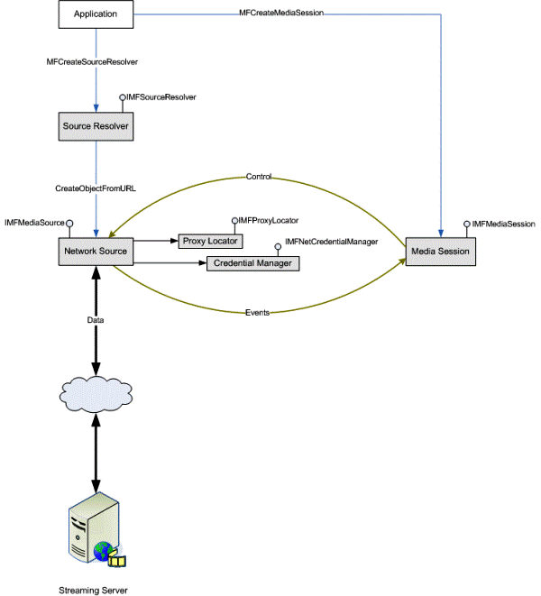

The network source provides the base implementation for streaming media files and exposes the IMFMediaSource interface. The specific network source implementation depends on the protocol used to open the source such as RTSP or HTTP. The protocol-specific network sources extend the basic network functionality. For information about the supported schemes and protocols, see Supported Protocols.
The network source:
Creating a media source for a source from the network is not different from a media source for a local file. The application passes the URL for the source to Source Resolver methods such as IMFSourceResolver::CreateObjectFromURL or IMFSourceResolver::BeginCreateObjectFromURL and specifies the MF_RESOLUTION_MEDIASOURCE flag. For more information about using this flag, see Using the Source Resolver.
Depending on the scheme provided by the application, the source resolver loads the appropriate the scheme handler object, which exposes the IMFSchemeHandler interface. The application can also use the scheme handler directly to create the network source by calling IMFSchemeHandler::BeginCreateObject.
For more information, see Scheme Handlers and Byte-Stream Handlers.
Media Foundation does not support byte streams for network sources. The byte stream object is only supported in the downloaded content scenario. All the data is transmitted as quickly as possible so that it can be saved as a file on the local machine. web servers provide downloaded data. There is no communication from the client to the server after the download begins. In this case the HTTP download protocol is used.
If the application requests the source resolver to create a byte stream object for "http:", "mms:", or "rtsp:" schemes, then the call fails with the MF_E_UNSUPPORTED_SCHEME error.
[!Note]
In Windows 7, the network source supports Windows Media Station files (.NSC). These files are used in multicast streaming of media content over a network. To create the network source for a specified .NSC file, the application must use the source resolver.
Â
If the application is using the scheme handler, then the asynchronous call ignores the dwFlags parameter and returns a pointer to the network source on completion.
The following illustration shows the data flow for media streaming using the network source.

This topic describes the features supported by the network source and the associated configuration options. An application can configure the network source when creating the network source object. These options are stored in an IPropertyStore object, which the application must pass in the pProps parameter of the source resolver methods or IMFSchemeHandler::BeginCreateObject.
The auto-reconnect feature of the network source enables a client to reconnect to the media server automatically when the TCP connection to the server fails or the client fails to receive packets. When connection fails, the network source attempts to reconnect to the media server using the same configuration that was used in the previous connection. The reconnection process is asynchronous. The network source raises the MEReconnectStart event when it begins reconnection and the MEReconnectEnd event when the reconnection succeeds or fails.
If the number of reconnection attempts exceeds the maximum value specified by the MFNETSOURCE_AUTORECONNECTLIMIT property, the reconnection operation is canceled. The number of reconnection attempts is stored in the MFNETSOURCE_AUTORECONNECTPROGRESS property.
Auto-reconnect enables smooth playback of media content even when the TCP connection to the media server fails. For a smooth playback experience, the client must have sufficient data, at least 1 to 2 minutes, in its cache to continue playback until reconnection. The maximum amount of data that the network source can buffer can be set in the MFNETSOURCE_MAXBUFFERTIMEMS property.
The network source client requests the server to stream some of the data at the beginning of the content at a faster rate than that specified by the bit rate of the content. If Fast Startup is enabled on the server, the server sends an accelerated bit-rate stream so that the client can buffer a sufficient amount of data faster than in real time. This improves user experience by minimizing initial buffering delays, which can be caused by various factors such as low speed of the client computer or the network, and available bandwidth.
To specify the amount of fast-streaming data that the client can request, set the MFNETSOURCE_ACCELERATEDSTREAMINGDURATION property. If the network source is using UDP as the transport protocol, specify the maximum amount of fast-streaming data by setting the MFNETSOURCE_MAXUDPACCELERATEDSTREAMINGDURATION property instead.
Fast streaming on the client is also possible through the Fast Cache feature—streaming on-demand content faster than real time and caching data on the client's local cache. To use this type of fast streaming, Fast Cache must be enabled on the network source, and the server must support it. When the client requests content from the server, the network source first checks to see whether the content is already in the client's cache. If the content is in the client's local cache and has not expired, it is rendered. If the content is not in the local cache or has already expired, the content is streamed and cached, and the network source plays it from the local cache. In subsequent requests, for playlists, only missing entries are cached and then played. If a playlist entry is already in the client's local cache, it is played from there and not cached again.
By default, Fast Cache is enabled on the network source client. However, the following factors also determine whether the feature is used:
The Fast Cache feature is controlled by the MFNETSOURCE_CACHEENABLED property.
The network source provides efficient buffer management that monitors the buffer state on the client. By default, the network source buffers 5 seconds of data at startup. This value can be configured by setting the MFNETSOURCE_BUFFERINGTIME property. Based on this property value, the network source computes the buffer size that is sufficient to ensure smooth and uninterrupted playback of the media content. If this property is set to 0, buffer management is disabled. When the amount of content in the buffer is low, the network source starts buffering and raises the MEBufferingStarted event to indicate that buffering has begun. Upon receiving this event, the pipeline stops rendering. When buffering is complete, the network source raises the MEBufferingStopped event, and the client can start rendering again.
The client starts rendering the content after it has accumulated the amount of data indicated by the buffer size of the first sample. If this value is lower than the calculated buffer size, then the playback starts immediately. This behavior is very similar to the Fast Startup feature.
The MFNETSOURCE_MAXBUFFERTIMEMS property stores the maximum amount of data that can be buffered.
When a client connects to the media server, as part of the connection setup, the network source performs static packet-pair measurement to estimate the initial link bandwidth between client and server. Based on the result of this measurement, the client can select audio and video streams that fit within the estimated bandwidth. This ensures smooth playback of the streaming media content.
During the Fast Startup stage, dynamic packet-pair measurement is performed. In this process, the client receives large amounts of data, which can be multiple packets or samples.
The result of dynamic packet-pair measurement is more accurate than the link bandwidth estimate returned by static packet-pair measurement because the static packet-pair process sends a single packet of fixed size, which may not yield accurate results for high bandwidth networks.
The application can get the estimated bandwidth by using the MFNETSOURCE_PPBANDWIDTH property.
Network conditions may change dynamically, causing glitches in playback of the network source. The network source can change the client's initial stream selection based on the receiving rate and the buffer state. For example, the client might switch to a lower bit rate during network congestion and switch back to a higher bit rate when network traffic has improved and the client has accumulated a sufficient amount of buffered content.
Networking in Media Foundation
Â
Â